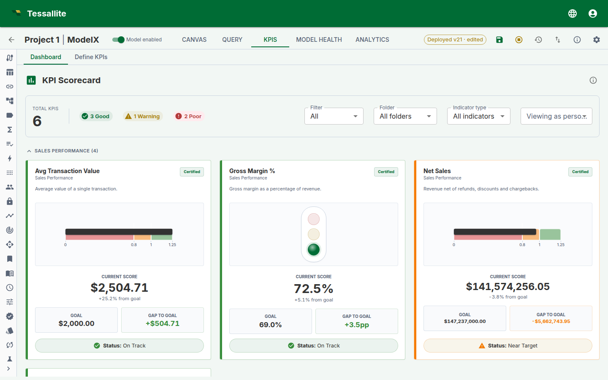

KPIs (Key Performance Indicators)
What this covers
KPIs track how well your organisation is meeting its business objectives. Each KPI uses an expression written in the KPI formula language to compute a value, then compares that value against a target using threshold bands that produce a traffic-light status. This article explains what KPIs are, the expression system, KPI types, thresholds, time intelligence, the scorecard, snapshots, governance, and integrations.
How KPIs work
A KPI is a named metric definition stored within a semantic model. It uses a formula expression to derive a numeric value from one or more measures, then evaluates that value against configurable threshold bands to produce a status (good, warning, poor) and detects a trend direction (improving, stable, declining).
Expression system
KPIs are defined using a formula language with 21 built-in functions. The expression is compiled to SQL and executed against the source database via the query-router.
Core functions
| Function | Description | Example |
|---|---|---|
measure("Name") | Reference a model measure. | measure("Revenue") |
kpi("Name") | Reference another KPI's value. | kpi("Margin %") |
literal(n) | A constant number. | literal(100) |
safe_div(a, b) | Division returning NULL when b is zero. | safe_div(measure("Revenue"), measure("Cost")) |
div(a, b, fallback) | Division with a fallback value. | div(measure("A"), measure("B"), 0) |
coalesce(a, b, ...) | First non-NULL value. | coalesce(measure("A"), literal(0)) |
if_then_else(c, t, f) | Conditional. | if_then_else(measure("A"), measure("B"), literal(0)) |
abs(x) | Absolute value. | abs(measure("Variance")) |
round(x, d) | Round to d decimal places. | round(measure("Rate"), literal(2)) |
min_of(a, b) | Smaller of two values. | min_of(measure("A"), measure("B")) |
max_of(a, b) | Larger of two values. | max_of(measure("A"), measure("B")) |
Time intelligence functions
| Function | Description |
|---|---|
prior_period(expr, grain) | Same expression from the prior period (year, quarter, month, week). |
period_to_date(expr, grain) | Cumulative value from period start (YTD, QTD, MTD, WTD). |
moving_avg(expr, n, grain) | Rolling average over n periods. |
trailing_sum(expr, n, grain) | Rolling sum over n periods. |
lag(expr, n, grain) | Value from n periods ago. |
lead(expr, n, grain) | Value from n periods ahead. |
pct_change(expr, grain) | Percentage change from prior period. |
cagr(expr, n) | Compound annual growth rate over n years. |
fiscal_period_to_date(expr, grain) | Period-to-date using fiscal calendar. |
Arithmetic operators (+, -, *, /) and parentheses are supported. Expressions are validated live in the wizard before saving.
How rolling windows are measured. Functions that look back over "the last n periods" (moving_avg, trailing_sum, lag, prior_period, pct_change) measure each period as a rolling interval counted back from today's date — not as a calendar period. A "month" window ending today covers the last 30-ish days (for example 12 May to 12 June), not the calendar month of May. Two consequences worth knowing:
- Windows are anchored to today. The same KPI evaluated tomorrow looks at slightly different rows. This keeps the number fresh for daily dashboards, but it means the value is not "May's average" — it is "the average of the 30 days before today".
- Empty periods are skipped, not counted as zero. If one of the windows contains no data at all (say your data ends two months ago), a 3-period moving average becomes the average of the 2 windows that do have data. The result is never diluted by phantom zeros — but it also means the "3-month average" label can quietly describe fewer than 3 months. If you need strict calendar periods, give the KPI a time window filter on calendar boundaries instead.
KPI types
The wizard offers six KPI type presets that generate the appropriate expression:
| Type | Description | Expression pattern |
|---|---|---|
| Simple measure | Track a single measure against a target. | measure("Revenue") |
| Ratio | Divide one measure by another. | safe_div(measure("Revenue"), measure("Cost")) |
| Variance | Difference between two measures. | measure("Actual") - measure("Budget") |
| Growth rate | Period-over-period change. | pct_change(measure("Revenue"), "month") |
| Moving window | Rolling average or trailing sum. | moving_avg(measure("Revenue"), literal(3), "month") |
| Composite | Weighted combination of other KPIs. | kpi("A") * literal(0.6) + kpi("B") * literal(0.4) |
You can also write custom expressions directly in the formula editor.
Targets and direction
Each KPI can have a target value. The target determines the reference point for threshold evaluation.
Target types: no target, static value, from a measure, prior period value, or custom expression.
Direction controls which way is "good":
| Direction | Meaning | Example KPIs |
|---|---|---|
| Higher is better | A larger value is a better result. | Revenue, satisfaction score, conversion rate. |
| Lower is better | A smaller value is a better result. | Cost per unit, error rate, churn, response time. |
| Closer is better | The best result is exactly at the target; any deviation above or below is worse. | Budget adherence, inventory level, production tolerance. |
Direction affects everything on the scorecard card:
- Gauge and chart visuals show the needle or bar at a position that reflects how well the KPI is performing relative to its target, not just the raw ratio. For example, a "lower is better" KPI with a value half its target shows the gauge at 200% (beating the goal by 2x), not at 50%.
- Variance is signed so that a positive number always means "beating the goal" and a negative number means "missing the goal", regardless of direction. A cost KPI (lower is better) that is 10 below target shows "+10", not "-10".
- Trend reflects whether the KPI is moving in the desired direction. For a "closer is better" KPI, moving from 110 to 105 when the target is 100 is "Improving" (getting closer), even though the raw value decreased. For a "lower is better" KPI, a decrease in value is "Improving".
- Colour coding on trend chips and goal-delta badges follows the direction-aware signal: green means the KPI is doing well relative to its goal, red means it is doing poorly.
Threshold bands
Threshold bands define when a KPI shows green, amber, or red. You can choose from presets (standard 3-band, standard 4-band, tight tolerance, centred deviation) or configure custom bands. Each band has a label, colour, and min/max range.
When you set the KPI direction, the default threshold bands adjust automatically:
- Higher is better: green at the top of the scale (e.g. 80–100 = On Track), red at the bottom (0–50 = Off Target).
- Lower is better: green at the bottom (e.g. 0–50 = On Track), red at the top (80–100 = Off Target). This reflects the fact that low values are good.
- Closer is better: green in the middle (e.g. 70–100 = On Track), red at the extremes (0–30 = Off Target). This reflects the fact that the best result is near the target, and deviations in either direction are worse.
You can always customise bands after the defaults are applied.
Evaluation types: percentage of target, absolute variance, percentage variance, z-score (statistical), percentile rank (peer group).
A colour-blind-safe palette option is available.
Trend detection
| Trend | Icon | Meaning |
|---|---|---|
| Improving | Green up arrow | Value is moving in the desired direction. |
| Stable | Grey flat arrow | Value is within the trend threshold. |
| Declining | Red down arrow | Value is moving against the desired direction. |
How direction affects trend:
- Higher is better: an increase is improving, a decrease is declining.
- Lower is better: a decrease is improving, an increase is declining.
- Closer is better: moving closer to the target is improving, moving further from it is declining. This is measured by comparing the absolute distance from the target (|value − target|), not the raw value direction. Moving from 90 to 95 when the target is 100 is improving (distance shrank from 10 to 5). Moving from 105 to 110 when the target is 100 is declining (distance grew from 5 to 10).
The trend threshold (default 1%) and comparison period (day, week, month, quarter, year) are configurable per KPI.
Visual types
| Type | Description |
|---|---|
| Traffic light | Three-lamp signal with the active lamp lit green, amber or red by status. |
| Gauge | Circular dial showing performance relative to target. The needle position accounts for the KPI direction, so a "lower is better" KPI that beats its target shows the needle in the green zone. |
| Bullet chart | Horizontal bar that grows to the value over translucent band lanes, with a target marker at the threshold to reach. |
| RAG bar | Solid red/amber/green track with a marker at the value. |
| Progress ring | Circular ring filling toward the target, coloured by status, with the percent shown in the centre. |
| Thermometer | Vertical column rising through the status bands. |
Persona filtering
When a persona is active, KPIs are filtered to show only those whose referenced measures are within the persona's allowed measure list. If a KPI references a measure outside the persona scope, it is hidden from the list and blocked from evaluation. This applies to the scorecard, the API, and all evaluation endpoints.
Composite KPIs
Composite KPIs combine multiple child KPIs using weighted scores. Set a parent KPI and assign weights to each child. The composite value is computed as the weighted sum of child KPI values, with optional normalisation.
How the score is computed
- Each child is evaluated and normalised to a 0-100 score — by default as a percentage of the child's own target (a child at 100 against a target of 200 scores 50).
- Weights are renormalised to sum to 1. Weights of 3 and 1 behave exactly like 0.75 and 0.25, so you can use any convenient scale.
- Children with no value or no usable target are excluded, and the remaining weights are renormalised. If every child is excluded, the composite has no value.
- The composite's own status, trend, and formatting are then computed from the score against the composite's target — exactly the same way as for any other KPI, and identically wherever the KPI appears (KPIs panel, Scorecard, the
$KPIstable for BI tools).
When a child input breaks
There are two very different reasons a child can end up with no value, and the platform now treats them differently:
- No data. The child evaluated correctly but simply has nothing to show for the current slice (for example, a region with no sales this month). This is normal. The child is quietly dropped, the remaining weights renormalise, and the parent keeps showing a healthy score. Nothing is flagged.
- A broken input. The child's evaluation failed — for example its formula references something that no longer exists, the underlying query errored, or it tripped a nesting or circular-reference guard. This is not "no data"; it means one of the numbers feeding your score is broken.
When a child is broken, the composite still computes its score from the children that did work, but it now carries a visible Degraded badge on its scorecard card. Hover the badge to see exactly which child failed and why. This stops a broken input from being silently swept under the rug while the parent shows a falsely confident number.
If every child is broken, there is nothing trustworthy left to score from, so the composite shows an error instead of inventing a number.
Nested composites
A composite can itself be the child of another composite. The platform scores these recursively, from the bottom up: the inner composite's weighted score becomes its raw value inside the outer composite, and is normalised against the inner composite's own target like any other child. Example: an "Overall Health" composite whose only child is a "Financial Health" composite scoring 40 against a target of 50 evaluates to 80 (40/50 of target, normalised to 0-100).
Two guard rails apply, and both fail with a clear error rather than a silently wrong number:
- Nesting is limited to 5 composite levels. Deeper hierarchies return "Composite evaluation failed — composite nesting deeper than 5 levels". If you hit this, your scorecard tree is probably trying to do too much in one number — split it.
- Circular references are rejected. Ownership and value/target references are checked together, so a child cannot refer back to its composite parent.
Who sees what
Composite scores respect the viewer's privileges. Draft children are excluded for users who cannot see drafts, and children referencing measures outside the viewer's persona scope are excluded too — in both cases the remaining weights are renormalised. A child value or target that reaches a KPI denied by row security is different: the whole composite is marked Restricted, and visible siblings are not renormalised into an apparently complete score. This means a viewer and an admin can legitimately see different composite scores for the same KPI: each sees the weighted score of the children they are allowed to see. When comparing numbers across users, check certification status and persona scope first.
The KPI Scorecard
The KPI Scorecard provides a live, at-a-glance view of all KPIs in a model.

Each card is built from one server-computed evaluation, so the visual, the value, the gap-to-goal, and the status badge always tell the same story. The summary bar at the top counts how many KPIs are Good, Warning, or Poor, and the filters let you narrow by certification, folder, or indicator type — or preview the board as a specific persona before you publish.
What it shows
- Summary bar — total KPI count and chips showing how many are Good, Warning, Poor, or Unknown.
- Filters — narrow the board several ways, in any combination:
- Certification — All, Certified only, or Deprecated.
- Display folder — show one folder, or all folders.
- Indicator type — show only Leading, only Lagging, or Unclassified KPIs. (Leading indicators predict where a number is heading; lagging ones report where it has already been.)
- Viewing as persona — preview the board exactly as a chosen persona would see it. KPIs that reference a measure outside that persona's scope drop out of view, so you can confirm what each audience is allowed to see before you publish. Choose "Default (no persona)" to see everything you are allowed to see.
- KPI cards — a responsive grid of cards, each showing the KPI name, certification badge, current formatted value, status colour, trend arrow, and sparkline. On a card with a gauge, the needle, its coloured band, and the status badge always agree — they are plotted from one server-computed position, even for "lower is better" KPIs and percentile or z-score thresholds where the good and bad ends are reversed.
- Grouping — KPIs are grouped by their display folder.
How evaluation works
The scorecard evaluates KPIs using the evaluate-batch endpoint. Each KPI's expression is compiled to SQL and executed via the query-router. Results include the computed value, formatted value, status code, status colour, trend direction, and sparkline data points. Results are cached with a configurable TTL. The cache is invalidated when a KPI is created, updated, deleted, reverted, or the model is deployed. Composite-child changes also invalidate the parent and KPIs that depend on it.
Snapshots
KPIs can capture periodic snapshots of their evaluated values for historical tracking. Snapshot frequency and retention are configured per KPI in the wizard (only available for non-draft KPIs).
Available frequencies: hourly, daily (midnight or 6 AM), weekly (Mondays), monthly (1st), quarterly (1st of Jan/Apr/Jul/Oct). Retention ranges from 7 to 365 snapshots.
Governance
Certification lifecycle
| Status | Meaning |
|---|---|
| Draft (default) | Available for use, not formally endorsed. |
| Certified | Reviewed and approved for organisational use. Green badge. |
| Deprecated | No longer recommended. Orange badge. Optionally linked to a replacement KPI. |
Certification and deprecation are gated by ownership: only the KPI owner or an admin can change the certification status.
Version history
Each save creates a new version. Versions can be compared and reverted from the wizard review step.
Audit trail
All KPI operations (create, update, delete, certify, deprecate, revert) are logged to the audit trail.
JDBC and XMLA exposure
- XMLA — MDSCHEMA_KPIS rowset returns KPI metadata including expression, target, status, and trend. Composite parent/child relationships and weights are included.
- JDBC — A virtual
$KPIstable is registered for each model (e.g.Sales$KPIs). BI clients can query it like a regular table:SELECT * FROM "Sales$KPIs"The table returns one row per KPI with columns:
kpi_name,value,target,status,status_label,trend_pct,formatted_value,evaluated_at. Values are refreshed automatically by the scheduler snapshot sweep and by on-demand batch evaluations.
KPIs in the conversational agent
The conversational agent can evaluate KPIs on demand using the evaluate_kpi tool. When a user asks about KPI performance, the agent retrieves the list of non-deprecated KPIs from the model profile and evaluates any of them.
KPIs in the Excel plugin
=TESS.KPIVALUE("kpi_id")— returns the current evaluated value.=TESS.KPIGOAL("kpi_id")— returns the target value.=TESS.KPISTATUS("kpi_id")— returns the status code (1= Good,0= Warning,-1= Poor).
Best practices
- Use safe_div for division. Always use
safe_div()instead of/to avoid divide-by-zero errors. - Name KPIs clearly. Use display names that business users will recognise.
- Organise with display folders. Group related KPIs so the Scorecard is scannable.
- Certify KPIs before sharing. Certification signals which KPIs are the official, approved metrics.
- Deprecate instead of deleting. Deprecating preserves version history and audit trails.
- Set up alerts for critical KPIs. Use threshold breach alerts to get notified early.
- Assign a time dimension for time intelligence functions to work correctly.
- Use composite KPIs for balanced scorecards that combine multiple metrics.
Related
- Alert Configuration — set up KPI alert routes.
- Define Measures — create the measures that KPIs reference.
- Agent Chat — ask the agent to evaluate KPIs in natural language.
- Tessallite Excel Add-in — access KPIs from Excel.